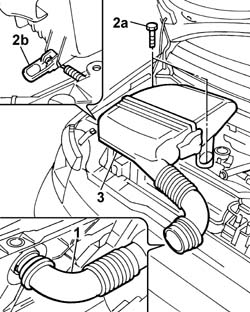
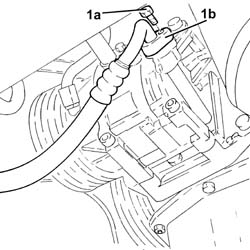
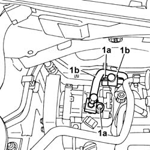
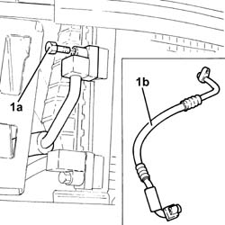
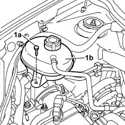
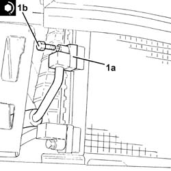
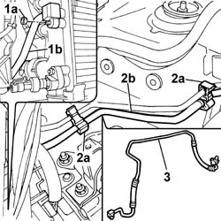
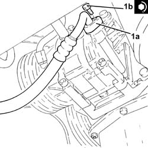

5040A50 pipe from compressor to air conditioner condenser - r+r
- Path
- Procedures > 50 AUXILIARY UNITS > 5040 AIR CONDITIONING CASING AND COMPONENTS > 5040A air conditioner coolant circuit > 5040A50 pipe from compressor to air conditioner condenser - r+r
- Kind
- repair procedure (removal / refitting; the operation number is the code)
- Applies to
- all engines; all production periods
- Interactive page
- https://sloeber94.github.io/elrnDB-fPnd/en/#/2752881
Applies to: engines: 1.1, 1.2 8v; all production periods
 Removing
Removing
 Refitting
Refitting1. Release the air hose from the cold air intake.
2. Undo the fixing bolts (2a) and release the fastening clip (2b).
3. Remove the air filter casing complete with hose.

Applies to: engines: 1.3 JTD 16v; all production periods
Removing
RefittingRemove the car from the ramps.
0010T84 coolant for air conditioning system dehydrate and recharge .
7055B90 Left front WHEEL ARCH LINER - R.R.
7055B91 Right front WHEEL ARCH LINER - R.R.
1. Undo the bolt (1a) and disconnect the pipe from the compressor to the air conditioning condenser (1b).

Applies to: engines: 1.1, 1.2 8v; all production periods
7055B90 Left front WHEEL ARCH LINER - R.R.
7055B91 Right front WHEEL ARCH LINER - R.R.
1. Undo the fixing bolts (1a) and disconnect the air conditioning rigid pipes (1b) from the compressor.

Applies to: engines: 1.3 JTD 16v; all production periods
1. Undo the bolt (1a) and disconnect the pipe from the compressor to the condenser for the air conditioner (1b) and remove it.

Applies to: engines: 1.1, 1.2 8v; all production periods
1. Undo the fixing bolt (1a) and move the engine coolant reservoir (1b) away from the work area.

Applies to: engines: 1.3 JTD 16v; all production periods
Refitting
Removing1. Fit the pipe from the air conditioning compressor to the condenser (1a) in position, connect it to the condenser and tighten the bolt (1b) to the recommended torque.
 | Fastening | Component | Ø | Value (daNm) |
|---|---|---|---|---|
1b | Bolt | PIPES FROM COMPRESSOR TO CONDENSOR | M6 | (Condenser side) 0.7 ÷ 1.1 |

Applies to: engines: 1.1, 1.2 8v; all production periods
1. Undo the fixing nut (1a) and disconnect the pipe (1b).
2. Open the
3. Remove the air conditioning pipe.

Applies to: engines: 1.3 JTD 16v; all production periods
1. Connect the pipe from the air conditioning compressor to the condenser (1a) and tighten the bolt (1b) to the recommended torque.
| Fastening | Component | Ø | Value (daNm) |
|---|---|---|---|---|
1b | Bolt | PIPES FROM COMPRESSOR TO CONDENSOR | M6 | (Compressor side) 0.7 ÷ 1.1 |

Applies to: engines: 1.1, 1.2 8v; all production periods
Refitting
RemovingFit the air conditioning pipe in place and secure it to the fastening clips.
Fit the pipe in place on the condenser and on the compressor and tighten the fixing nut and bolt.
Fit the engine coolant reservoir in place and tighten the fixing bolt.
Fit the connector for the air conditioning pipe disconnected previously in the housing on the compressor and tighten the fixing bolt.
Fit the air filter complete with cold air intake hose in place and tighten the fixing bolts.
7055B91 Right front WHEEL ARCH LINER - R.R.
7055B90 Left front WHEEL ARCH LINER - R.R.
0010T84 coolant for air conditioning system dehydrate and recharge
Applies to: engines: 1.3 JTD 16v; all production periods
7055B91 Right front WHEEL ARCH LINER - R.R.
7055B90 Left front WHEEL ARCH LINER - R.R.
0010T84 coolant for air conditioning system dehydrate and recharge
Remove the car from the ramps.
Topics linked from this page (7)
- 0010T84 coolant for air conditioning system dehydrate and recharge
- 4450B02 left front wheel r r
- 4450B04 right front wheel r r
- 7055A42 FRONT GRILLE - R+R
- 7055B90 Left front WHEEL ARCH LINER - R.R.
- 7055B91 Right front WHEEL ARCH LINER - R.R.
- 7210E10 R.R. FRONT BUMPER